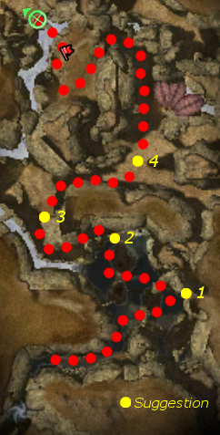

Elite: Cleave

Click to enlarge · Local cache · Wiki
You've found a way to Vabbi through the Bahdok Caverns , now all that remains is to safely make it through to the other side. Easy... aside from the treachery and the small fact the Kournans have gotten there before you.
Region: Kourna · Mission: 8 of 20 · Type: Cooperative
Required hero: Dunkoro
Travel through the Bahdok Caverns to escape to Vabbi.
At the start of the mission you are blocked in by some Corsairs, who claim to be your guides. Eventually their leader, Captain Bohseda, gets a quest marker and you can talk to him. You have two options, either to trust him or to not trust him. If you trust him, he will lead you up the corridor then he and the rest of the Corsairs will turn on the party and you will be ambushed by more Corsairs. If you don't trust him, he and the rest of the Corsairs turn hostile straight away and you can fight them and the ambushing group of Corsairs separately. Otherwise the choice has no impact on the rest of the mission or the bonus.
If you choose to ignore Dunkoro, the mission is pretty straight-forward. From the area where you kill the ambushing Corsairs there are two exits which head to the north. Head up the one which will take you west, you'll meet a group of Corsairs coming down. Follow the river here until you get to an open area and follow the wall running perpendicular to the river, that is, turn right. After following this you'll come to another exit to the right. Walk into this area. You should see two Corsair Runners. Head up to where they are and follow the runner which goes straight north - the one that doesn't run through the insects. Additional Corsairs will arrive. Continue the way the Corsair was running after finishing this group and follow the path as it goes downwards.
You will come to where the Kournan forces are. General Bayel and the Hunger are on the other side of a narrow bridge which is well protected by several Kournan Bowman with an excellent height advantage and are difficult for melee party members to get to. Rather than trying to eliminate the Kournan Bowmen from the bridge, run right under the bridge and use it to shelter the party from the bow attacks. You can now either use non-projectile skills to kill the Kournan Bowmen or ignore them and make sure that any melee party members are protected while they attack in the open. The simplest option is to stay under the bridge with the Kournan Bowmen above you and hence obstructed. It is possible to aggro only General Bayel from a set position under the bridge. It will take some time, but if you're not too focused on melee damage, you should be able to take him out and safely pull the Hunger towards you. Kill both General Bayel and then the Hunger to end the mission. Alternatively if you run across the second bridge, past both General Bayel and the Hunger, the Hunger will follow your party to almost across the bridge. Attack him near the end of the second bridge and you will be fighting him alone. If he starts to almost die, he will try to go back to General Bayel. If you cripple him, you should be able to kill him before the General has the chance to heal him.
The bonus is to follow the advice that Dunkoro offers at various points through the mission. There are 4 suggestions, the notification of which sometimes comes quite late and the update of the success of the objective is sometimes a long way after you followed the suggestion.
Head towards (1) on the map and you will see a path leading up with Mandragors patrolling down. After reaching the path Dunkoro will suggest you go to the western exit. Do not walk on the path at all as this can mean the failure of the objective, this applies to minions, heroes and henchmen. If the Mandragors are patrolling down when you reach the path, wait for them to make it to the water before engaging them to ensure safety of this bonus. The success of this suggestion is often confirmed when you reach the waterfall. You do not have to actually hear this suggestion to get credit for it, so feel free to simply head past the waterfall to begin with; however, if the suggestion does not update, you may have to go back over to the path to get Dunkoro to suggest anyway, just flag your party under the waterfall and go and get the suggestion yourself to risk no mistakes.
As you pass the waterfall and head up the western entrance, Corsairs at the top of the hill will begin patrolling toward you. Part way up the slope, Dunkoro will suggest you hide your presence from this group by falling back to the spot near the waterfall. It is best actually not to wait for this suggestion, because it can put you in an awkward situation. Kill Mandragor groups at the bottom of the waterfall before approaching the path. Station your party at the bottom of the waterfall and send one member on the path. As soon as this party member starts on the path, the Corsairs will start toward you, so you can move back to a safe distance without risking walking up the path.
The Corsairs will continue patrolling north and east. Sneak back unnoticed onto the western path to get credit for the suggestion. Keep in mind you will only be notified of your success after you complete the third suggestion. Also, if henchmen and heroes are caught by the Corsairs you won't be able to obtain this objective. When running back to the path, with only henchmen and heroes, disable any spirits and flag them to the top of the path so they won't stop with the Toxicity spirit in aggro range - they may attack it. If there are minions in your party, wait for the spirit to expire and die before starting suggestion two.
It should be noted that attacking the Spirit of Toxicity, and subsequently aggroing the group of Corsairs does not fail this second suggestion, if they are aggroed after they reach the water. In Hard mode, it is often impossible not to aggro this spirit, especially with minions. Because you do not get credit for this achievement for a little while, it is easy to assume failure, when the party has not actually failed.
Dunkoro suggests you follow the eastern wall to keep away from the Corsair camps. As this is the most efficient route through, this shouldn't be a problem. You will receive credit for this suggestion (along with credit for the previous one) when you reach the area where the next one is triggered. Do not continue following the eastern wall past the point where you need to pursue the runners or you will fail the bonus.
The last suggestion is the most difficult to complete. Dunkoro suggests that you stop the Corsair Runners from warning the Corsairs that you are coming. There are two Corsair Runners and true to their name, once you get close enough they run... in different directions. The fourth suggestion has a short delay before triggering - it follows the notification that you have completed the previous three. Don't wait for this, because by this time the Corsairs will be already on the move.
If possible split and take on both runners at once. Use snares and speed boosts to make sure you can kill them before they reach their destination. By inflicting conditions on the Corsair Runners, you can cause them to stop running for a moment to activate Antidote Signet.
The runners take a few seconds to start moving which you could use to your advantage. If you are playing with heroes, lock them on the runner which is closest to you before you reach the open area where they stand. Then proceed forward to attack the other one, starting with a snare. The heroes will probably kill the first runner even before it has a chance to start moving. The henchmen will follow you and help you kill the one you snared.
Once the last suggestion is completed continue on and finish the mission.
The above tactics work just as well in Hard mode as in normal. The runners at suggestion 4 are tougher due to them running faster, and more powerful snares such as Mind Freeze may be needed in addition to other snares. In addition, the Kournan Bowmen at the end of the mission may be difficult to fight because of their increased damage output. The tactic of sheltering under the bridge is recommended.
Alternatively, if using heroes and/or henchmen, flag them directly under the bridge. The bridge will obstruct the Kournan Bowmen while allowing you to attack the Hunger.